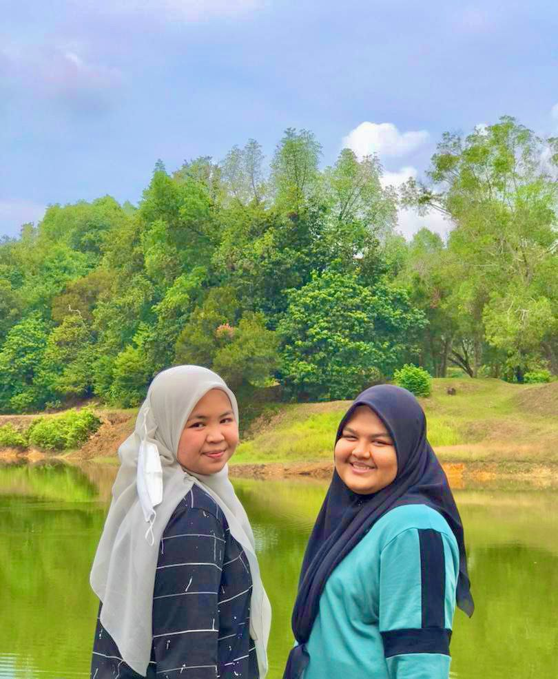

EXPERIENCE IN DIPLOMA
INFORMATION MANAGEMENT
INFORMATION MANAGEMENT
˚ ༘`✦ ˑ ִֶ 𓂃⊹
First Year
I've had some difficulties finishing assignments during my first year of studying information management. As the family's first daughter, I often assume that all I need to finish an assignment is a laptop and Google. I was mistaken, though, as all I really needed was some abilities to gather data and prepare the report. I once sobbed while working on an assignment that was quite difficult for me during the first semester. I was relieved when I met my new acquaintances and discovered that they were experiencing the same issue as me after being down for a week while doing the assignment. Every evening, we spend time together at Tasik Merbok. |
|  |
Second Year
In my sophomore year, I began to settle in with my new pals.We began leaving UiTM and embarking on adventures as a group. Additionally, I began to feel more at ease living on campus and staying up late to complete assignments. The fact that I still feel at ease and self-assured makes the second year of my life feel like my honeymoon. As the time goes by, we get closer as we always went to classes together because we stay in the same college. My favourite topic this semester is the records center since I find it to be a really fascinating subject. In addition, I did not cry once all semester. |

|
Third Year
During my third year, I starting to grow up. On weekends, we venture out more to explore this area and go cafe hopping. As in finishing the assignment, I started to feel a bit off since everything is starting to get harder. I learned about adobe during this semester, and that was the most terrifying experience in my life. While completing the magazine assignment, although I started right away after receiving the task, I still have to go through sleepless nights in order to complete it.Despite that, my friends and I still making memories together since we only have two semesters left. We also keep on collecting coupons if we want to stay in college for the next semester. |
Fourth Year
Finally, senior year. Since I have been missing my friends so much, I am beyond happy to finally be able to see them on the first day of this semester. I am resolved to turn in my assignments on time and to consistently finish my notes. This semester, I also began dating, but things did not work out. We split up over the break for the semester, and I still miss Opie, his cat. This semester has equipped me with the ability to make wise decisions and strive for skill. I learned about AACR, and I vowed never to see them again. Besides, I became involved with INFORMA and now manage the end-of-term dinner. I frequently take vacations with my buddies, and this semester we even attended our lecturers' weddings. We stayed at Dini's guesthouse, and Alya drove the car. I also went to volunteer at this one secondary school at Penang. |

|
Final Year
And lastly, the last semester. Since this is our final semester together, I'm depressed. This semester, I gained knowledge in coding. All in all, though, the experience is enjoyable even with the little errors and bad code. Additionally, we began our ENT300 printing business, which continues to this day. I'm beginning to get nervous about pursuing my degree and worry about what would happen if I gave up on my education. I'm starting to save money now that I have a second source of income so I can buy anything I want without having to ask my folks first. Even so, it's a pleasant experience despite being exhausting. |